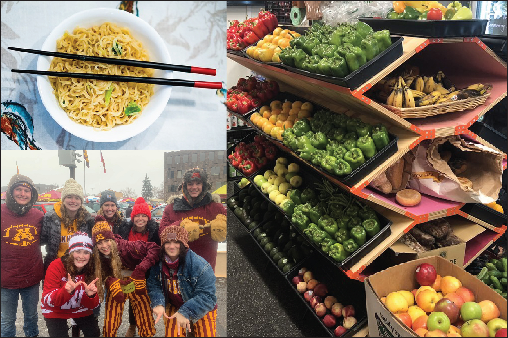

About
Problem Statement
Background
Hunger has become a significant issue on college and university campuses with over one-third of students experiencing food insecurity (defined by The Hope Center for College, Community and Justice at Temple University as “limited or uncertain availability of nutritionally adequate and safe foods”)*.
Middle-class students may joke about eating ramen but many students are truly hungry, reducing portion sizes or skipping meals altogether. Multiple factors are playing a role - including the rising cost of tuition, reductions in financial aid, and increased numbers of first-generation and non-traditional students.
No student should have to go hungry while pursuing their education.
The first student run food pantry was founded in 1993 at Michigan State University. Growing need has fueled the creation of food pantries on campuses across the country. The College and University Food Bank Alliance alone has over 700 members. The unique challenges of addressing hunger are magnified on college campuses - including barriers to transportation and limited income.
As an interesting response to hunger during the pandemic and economic crisis, community fridges began popping up across the country. The fridges are in public spaces, typically outside of businesses, and are open to anyone. The concept is simple: people place food in fridges and volunteers monitor the contents to make sure they’re fresh. If fridge locations are near college campuses they could provide students with 24/7 availability to healthy food options. While my goal with this project isn’t to provide food, an accessible resource like community fridges is in the spirit of what Food for Thought is trying to achieve.
The idea behind Food for Thought is to provide a resource for students who are experiencing food insecurity, to help them access fresh, healthy food; to let them know exactly when and where they can receive assistance nearby.
My Connection
Inspiration / Produce stand in UC Berkeley Food Pantry, Reniel Del Rosario
When I became aware of the increasing number of college students experiencing food insecurity I knew I wanted to create a project around the issue. My own children are currently in college and I’ve been engaged in hunger issues in my community, starting a weekend backpack food program at the middle school and working with the local food shelf. I understand that we need long term policy changes but in the meantime this website creates a more immediate opportunity to make a difference in someone’s life.
* The Hope Center for College, Community, and Justice; 2017 survey